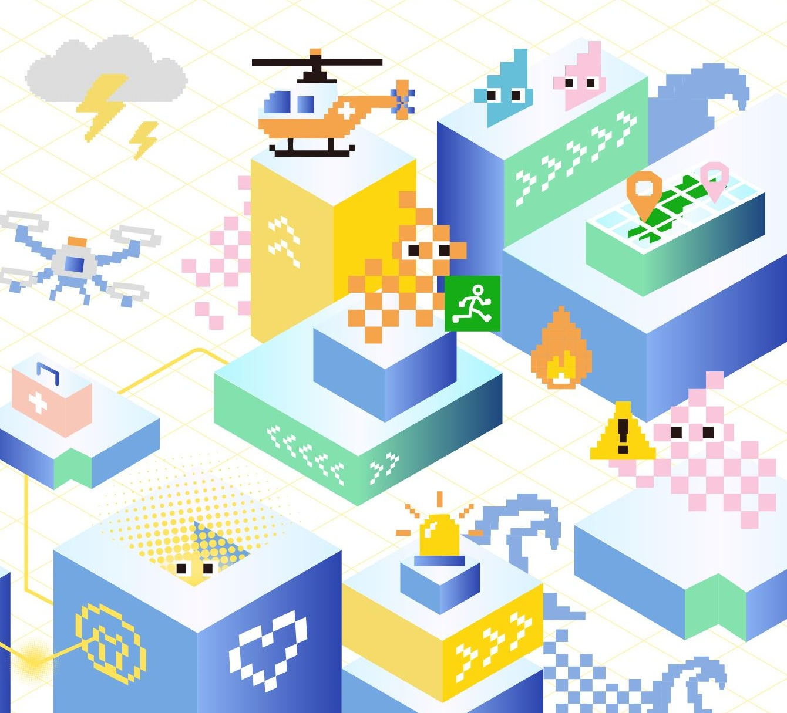
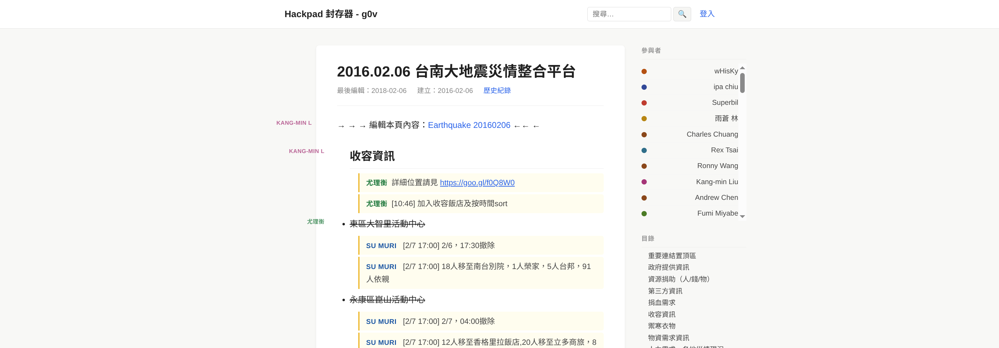
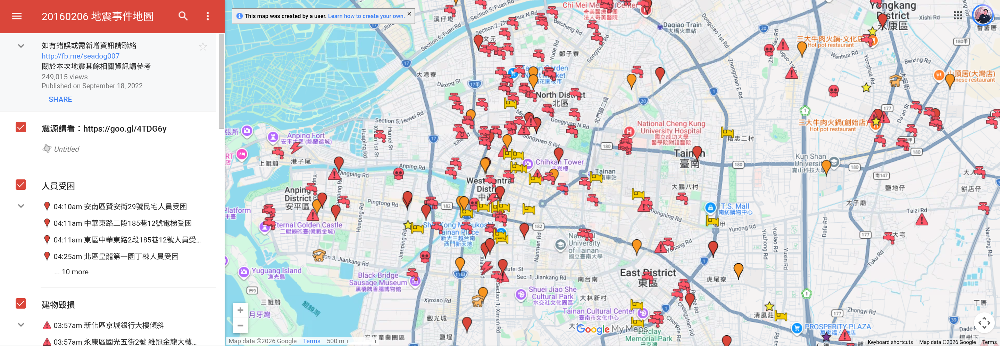

從開放圖資，到有用的防災行動
防災 GIS 資料開箱與應用
來源連結 · 多人補充 · 分類查閱

地點 · 事件分類 · 回報與查核

新北市重要地標資訊
保留原檔、來源與欄位
轉換座標、檢查資料
同一批 ID、位置與屬性
uMap ／ My Maps
國民中學 · 國民小學 · 捷運站消防機關 · 警察機關 · 避難收容處所
github.com/denny0223/ntpc-multiformat-demo-kitREADME.md · demo/
README.md
demo/
位置、名稱、類型能不能正確對上？
何時更新？是否開放？哪個窗口能確認？
使用者能抵達嗎？還有哪些必要條件？
道路、設施、事件收錄了哪些？
比例尺、投影、圖例凸顯了什麼？
提供者、製圖者、使用者如何補充與修正？
GIS＝地理資訊系統：把位置、屬性與問題放在一起處理。
地圖素材從哪裡來？
政府開放資料OpenStreetMap
資訊用什麼形式交換？
CSV · GeoJSONKML · GeoTIFF
用什麼整理與呈現？
QGIS · uMapMy Maps · Mapbox
把事物記成幾何與屬性。
點：地標線：道路面：行政區
每個格子記錄一個值。
影像像素高程 · 雨量
底圖交代位置，主題呈現資料
底圖：道路背景主題：本次地標
圖例與情境位置與範圍
提供者、更新時間欄位與授權
檔案下載API ／ 圖層服務
新北市 iMap（官方展示） · 資料集與欄位說明
教學例 · TM2 121 分帶
EPSG:3826 · 單位：公尺
GeoJSON 中的座標
單位：度 · 經度在前、緯度在後
citydashboard.taipei/dashboard
地圖：空間分布
圖表：時間與比較
查來源、回報問題
檔案：demo/landmarks.geojson
demo/landmarks.geojson
選擇 GeoJSON 檔案加入圖層
名稱 · 類型 · 地址位置與 record_id
來源說明檢視／編輯權限
檔案：demo/landmarks.csv
demo/landmarks.csv
定位欄位
轉換後的 WGS84 座標
標題與分類
標題選 name；分類選 category
各格式的 record_id 一致
選同一筆，切換圖層對照
基本 KML ／ 樣式 KML ／ KMZ
核對 ID、名稱與設施類型
列出無法定位的記錄
保留原值，列入查核
更新時間修正與回報窗口
檢視／編輯權限個資與敏感位置
現場使用條件斷網時的替代流程
標點、分類與分享
uMapGoogle My Maps
疊圖、連接資料、計算範圍
QGISGDAL ／ Python
操作流程、回報與整合
Leaflet ／ MapLibreMapbox
DELEGATE THE WORK
讀取欄位、整理格式轉換座標、產生檔案
KEEP THE JUDGEMENT
誰在什麼情境，需要做什麼決定？需要哪些資料與合作角色？
本投影片採用
創用 CC「姓名標示-相同方式分享 4.0 國際」授權條款釋出
Marp 製作
引用素材依原授權；封面插畫權利歸原權利人。
{ "type": "Feature", "properties": { "name": "示例地標", "category": "示例類型" }, "geometry": { "type": "Point", "coordinates": [121.46, 25.01] } }
name,category,longitude,latitude 示例地標,示例類型,121.46,25.01
<Placemark> <name>示例地標</name> <Point><coordinates>121.46,25.01</coordinates></Point> </Placemark>
doc.kml
github.com/denny0223/ntpc-multiformat-demo-kit
landmarks.geojson
landmarks.csv
landmarks.xlsx
landmarks-basic.kml
landmarks-styled.kml
landmarks-styled.kmz
Demo：github.com/denny0223/ntpc-multiformat-demo-kit